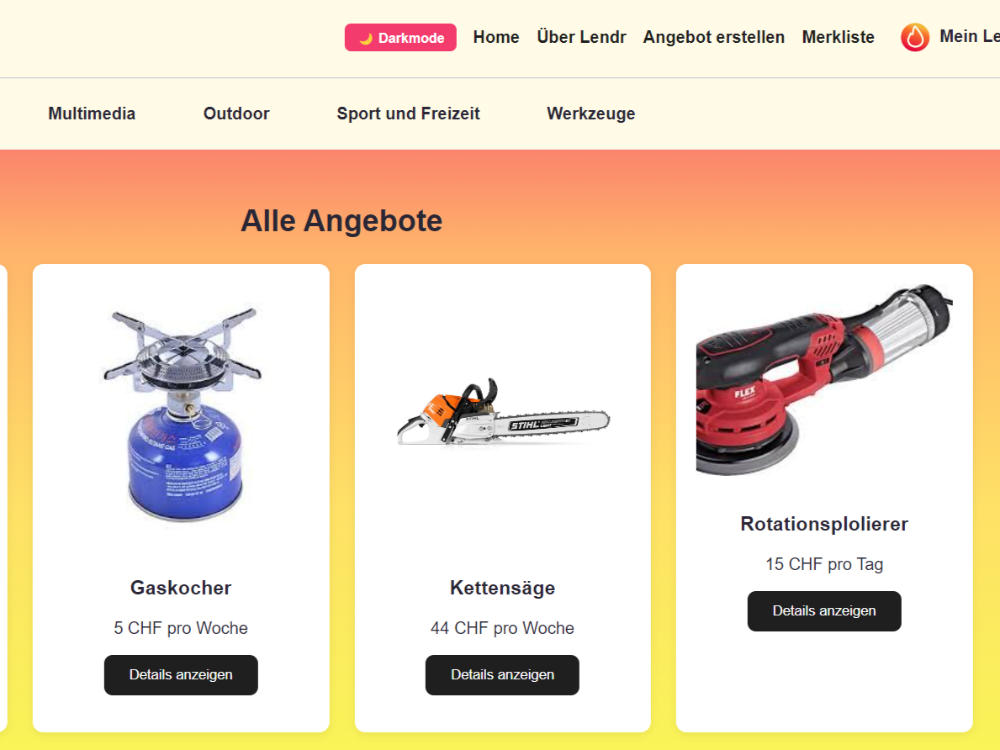

LENDR – Peer-to-Peer Rental Platform
- Title
- LENDR – Peer-to-Peer Rental Platform
- Description
- A full rental marketplace similar to Ricardo, built from scratch with Vue.js, TypeScript and a Strapi backend. Users can create items, manage listings, browse categories and interact through a modern interface. Developed as part of a software engineering module in a multi-person team.
- My Role
- Frontend development, API integration, UI/UX implementation, Strapi configuration
- Tech Stack
- Vue.js, TypeScript, Strapi, HTML/CSS, GitLab